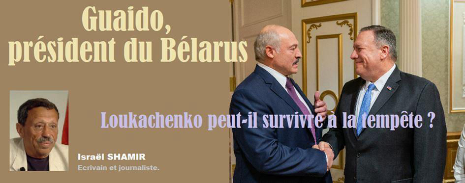
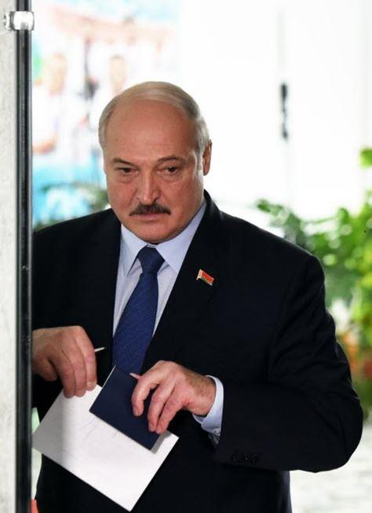
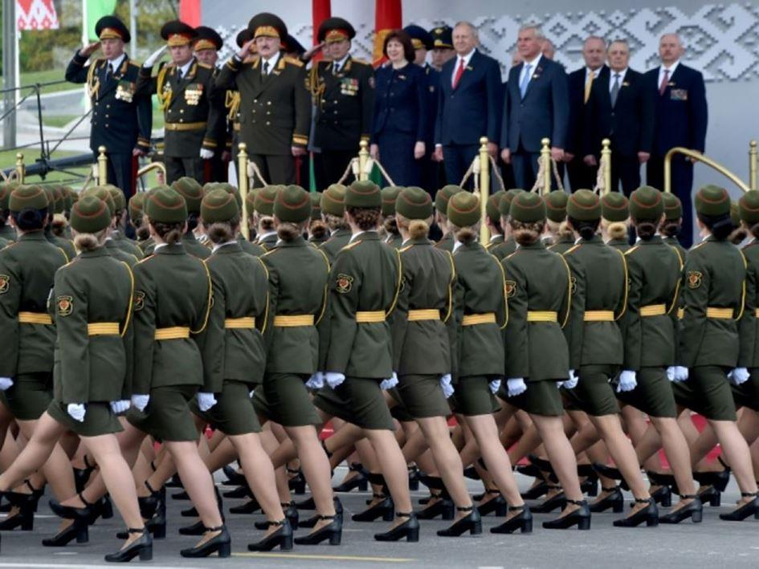
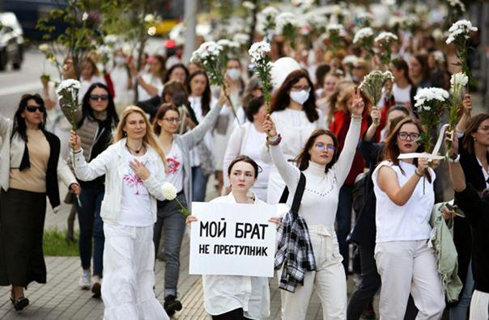
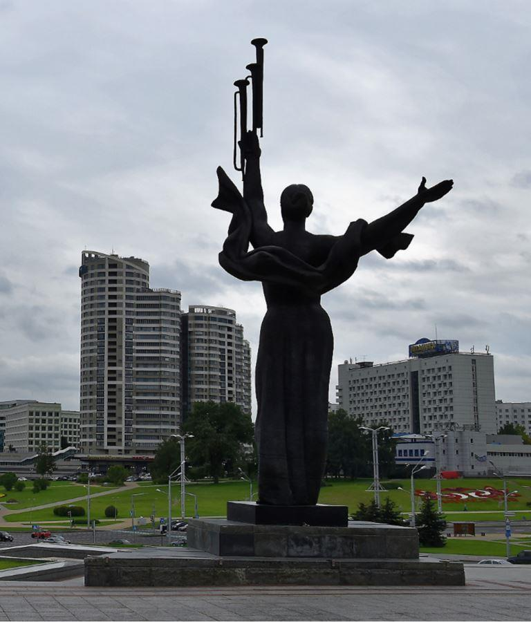
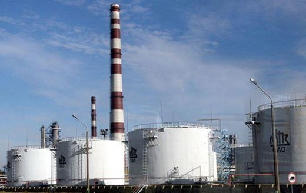
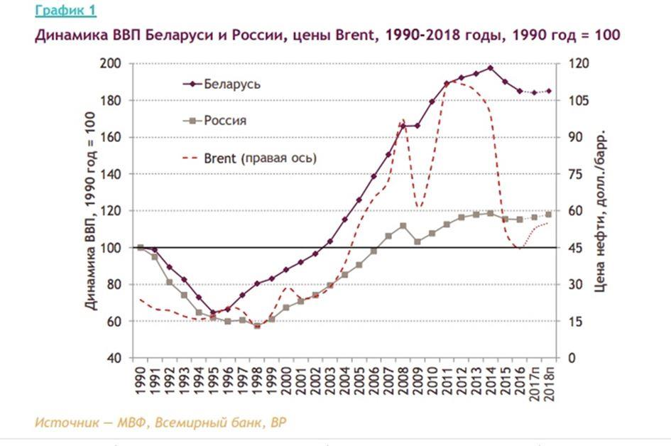

Guaido président du Bélarus. Loukachenko peut-il survivre à la tempête ?
par Israël SHAMIR

Ce n’est pas encore fini, mais Loukachenko peut-il survivre à la tempête ? Depuis les élections présidentielles du 9 août 2020, le Bélarus a connu une vague de protestations en bonne et due forme. Les manifestants affirment que les élections ont été truquées, tout comme les dames aux chapeaux de chatte en accusaient Trump en 2016. Les protestations sont présentées au monde entier à travers la loupe de la machine à fake news mondiale. Il existe des douzaines de canaux médiatiques, qui traitent tous du thème du truquage des élections et de la répression des manifestations.
Mais la répression biélorusse n’est pas un sujet brûlant, sur place. La foule n’est pas nombreuse, car les Biélorusses sont des gens très civils et obéissants, ils attendent même que les feux passent au vert (une qualité rare à l’Est). Malgré les provocateurs et les révolutionnaires formés par Soros, il y a peu de blessés, bien moins que n’en fait la confrontation moyenne entre vos manifestants dans l’air du temps et la police locale, qu’ils s’appellent Gilets Jaunes ou Black Lives Matter.
Un manifestant a essayé de lancer une grenade à main dans les rangs de la police ; il a raté son coup, la grenade lui a explosé dans la main et il est mort de ses blessures. Cet incident est déjà présenté par les médias comme un « meurtre de masse » et même un « génocide ». Les ambassadeurs de l’UE sont venus déposer des fleurs sur le lieu de son martyre. Ce dernier héros médiatique est devenu le nouveau George Floyd, une comparaison pertinente car le malheureux artilleur bélarussien avait également un riche casier judiciaire. Ils sont en train de produire un autocollant BLM où le B désigne la Biélorussie. Faut-il parler de « détournement culturel » ou de « non respect des règles d’utilisation » ? YouTube pourrait leur taper sur les doigts automatiquement, pour le copyright.
Les présidents de Pologne et de Lituanie ont proposé leur médiation, impliquant que Loukachenko devrait se retirer. Cette offre n’est guère tentante. En 2014, le président ukrainien de l’époque avait accepté l’offre de médiation européenne et en quelques jours, il s’était vu contraint de fuir en Russie.
Loukachenko est d’une autre trempe ; ses policiers ont réussi à faire taire les protestations, qui n’étaient de toute façon pas si fortes. Il est encore trop tôt pour parier si la révolution de couleur va définitivement échouer ou gagner. Mais quelle donc est la cause des protestations, au-delà des plaintes comme quoi la vie est injuste ? Qui finance et organise ces manifestations ?
La Biélorussie, richement dotée, a un certain nombre de prétendants. Les ennemis de la Russie au sein de l’OTAN veulent déplacer leurs chars à portée de tir de Smolensk ; la Pologne veut retrouver son ancienne dépendance (la Biélorussie a été sujette des Polonais pendant des centaines d’années). La Russie veut avaler la Biélorussie, mais Papa Loukachenko est trop coriace pour leurs mâchoires.
Un danger supplémentaire pour la souveraineté du Belarus, c’est l’entité opaque et puissante qui a organisé la réaction excessive du monde entier au coronavirus et a mis des milliards de personnes en détention. Loukachenko est le héros qui a rejeté toutes les injonctions au confinement ; le Belarus est resté calme et libre au milieu de l’hystérie mondiale. Les Bélarussiens ont pu applaudir leurs matchs de football tandis que le reste du monde battait en retraite et se terrait. À Pâques, les églises du Belarus sont restées ouvertes et la messe a été célébrée. Le 9 mai, jour de la Victoire en Europe, les Biélorusses ont eu leur défilé de la Victoire, tandis que même Poutine aux yeux d’acier était contraint d’annuler le sien. Une telle désobéissance au régime mondial devait être punie.
Comme Fidel Castro avant lui, Papa Loukachenko dirige son pays depuis des générations. Il a été réélu tous les cinq ans depuis 1994, année où lui, le plus jeune homme politique d’Europe, a battu le Premier ministre sortant lors d’une élection ouverte. Aujourd’hui encore, à 65 ans, sa stature n’est pas éclipsée. Ses résultats à Minsk, la capitale, ont dépassé les 60 % ; son principal concurrent a obtenu 15 %, tandis que pour l’ensemble du pays, il a obtenu environ 80 % des voix, un résultat impressionnant. Trop impressionnant, disent ses ennemis. En tout cas, il ne fait aucun doute qu’il a remporté la majorité des voix de ses compatriotes.
Le Belarus est un État mono-ethnique, avec très peu de diversité ; il n’y a pas de partis politiques forts, pas de médias puissants et indépendants, pas d’oligarques, pas de super-riches. Il est encore très soviétique, mais dans une version très élaborée, propre, moderne, bien remise à jour (l’URSS était assez misérable). Autre différence : pas de politique de parti. Alors que les Soviétiques ont toujours été dirigés par le parti communiste officiel, Loukachenko n’a pas de parti. Il n’aime pas les partis parce qu’ils séparent les gens. Il veut que les gens soient unis – et ça marche. Il n’y a pas de parti d’opposition important. L’opposition dit : « AGL [Alexander Grigoryevich Lukashenko], partez, vous avez gouverné pendant trop longtemps, nous en avons assez de vous ». Un citoyen sain d’esprit ne votera pas pour des gens qui n’ont pas d’autres objectifs que la convoitise du pouvoir. Être fatigué d’un président n’est pas vraiment un bon argument.
Après le premier sondage, les « élections truquées » sont devenues le cri de guerre de l’opposition. Comme les Clintoniens, qui ne pouvaient pas croire que quelqu’un voterait pour Trump, l’opposition en Biélorussie ne pouvait pas imaginer pourquoi les gens voteraient pour ce vieux fossile (65 ans). En effet, de telles revendications sont l’aliment de base de la politique moderne ; il n’y a guère de pays au monde où les résultats des élections ne soient pas contestés. On prétend toujours que les résultats ont été falsifiés, que le peuple a été induit en erreur, que le président élu ne méritait pas d’être élu, que ce sont des ploucs racistes qui ont voté pour lui ou que la Russie a fait basculer les sondages. Les raisons pour lesquelles les résultats des élections ne devraient pas être reconnus n’ont d’autre limite que celles de l’imagination humaine.
La dernière victoire électorale d’AGL a été officiellement reconnue par les pays du monde entier. Il a été félicité par les présidents de la Chine, de la Russie, de la Turquie ainsi que par le patriarche de Moscou Kyril (l’Église du Belarus fait partie intégrante de l’Église orthodoxe russe).
L’opposition tente de stimuler l’intérêt pour un changement de régime en suivant les manuels de Gene Sharp : faire monter la température avec des attaques contre la police, puis la rafraîchir avec des filles vêtues de blanc distribuant des fleurs et posant avec ces mêmes flics.
C’est la carotte et le bâton. Le point et le contrepoint. Le combattant de la liberté et le martyr. Cette technique a fonctionné avec succès dans de nombreux pays, et sera probablement mise en œuvre en novembre aux États-Unis.
Le Belarus nous montre en quoi consiste vraiment « l’ingérence étrangère dans les élections ». On n’en est plus à placer quelques publicités sur Facebook. On forme des centaines de jeunes hommes aux arts obscurs de la guerre urbaine : la recette pour bien utiliser les cocktails Molotov, le braquage de voitures, l’infiltration transfrontalière, la contrebande d’argent, le recrutement et le paiement de mercenaires, comment gérer un centre de crise 24 heures sur 24 depuis l’étranger, où et comment attaquer la police, comment préparer et mener une révolution de couleur scénarisée – voilà comment l’ingérence étrangère influence les élections au Belarus.
Que veulent les manifestants au-delà de la suppression d’AGL ? Il s’avère qu’ils ont un programme : ils veulent faciliter l’embauche et le licenciement des travailleurs, mettre fin à la protection par les syndicats et à la législation sur le droit du travail, et mettre fin à la réglementation des prix. Ce sont les idées néolibérales habituelles, mais voici la plus importante : ils prévoient de privatiser et de vendre les actifs du pays. Seulement voilà, c’est là que leur front unifié s’effondre : l’opposition pro-occidentale veut vendre la Biélorussie à des investisseurs occidentaux, tandis que l’opposition pro-russe veut la vendre aux oligarques russes. Ces actifs sont appétissants et abondants, car 80 % de l’industrie et de l’agriculture restent dans le domaine public, plus que dans tout autre État européen.
La Biélorussie est le dernier vestige de l’Union soviétique, la dernière république socialiste soviétique. L’URSS était fondée sur la propriété de l’État sur les moyens de production, c’est-à-dire les usines, la recherche, l’industrie et l’agriculture. Dans la Fédération de Russie, ces biens nationaux ont été privatisés par Boris Eltsine et donnés à quelques oligarques. Ce n’est pas le cas en Biélorussie. Leur industrie est toujours un bien national ; leurs exploitations appartiennent toujours à des coopératives agricoles locales et non à des exploitations agricoles mondialistes.
Le Belarus est toujours assez riche ; son industrie a été modernisée, tout comme son agriculture. Ils produisent et exportent beaucoup de tout, principalement vers la Russie voisine. L’Europe s’intéresse peu aux camions et aux saucisses du Belarus parce qu’ils ont leurs propres camions et saucisses à vendre, mais la Russie les achète parce qu’elle les préfère et sait qu’ils offrent un bon rapport qualité-prix. Les produits laitiers, les meubles et la mode biélorusses continuent d’être populaires en Russie.
Le Belarus a hérité de deux énormes raffineries, l’une à Mozyr et l’autre à Novopolotsk, capables de transformer le pétrole brut et le gaz en produits prêts à l’emploi. La Russie produit du pétrole brut et du gaz, le Belarus raffine le tout ; ils devraient pouvoir faire de bons bénéfices en travaillant ensemble.
Mais les oligarques russes derrière Gazprom ne se satisfont pas de leur part habituelle, ils ont donc créé une société intermédiaire basée en Lituanie ; la société « achète » le gaz russe et le « vend » ensuite au Belarus. Les paiements biélorusses sont redirigés à l’étranger vers les comptes bancaires offshore des oligarques. Unepartie atteint finalement les caisses de l’État russe, mais beaucoup de versements s’égarent.
Gazprom a continué à augmenter le prix du pétrole livré aux raffineries biélorusses jusqu’à le facturer plus cher à ce pays ostensiblement allié que les États hostiles que sont l’Ukraine et l’Allemagne. En réaction, la Biélorussie s’est tournée vers le raffinage du pétrole norvégien et saoudien : il était moins cher que le pétrole russe. Maintenant, ils raffinent le pétrole américain. Depuis, la Biélorussie a décidé de couper les vivres à la société intermédiaire de Gazprom, et la police biélorusse enquête maintenant sur le détournement de fonds de l’État russe vers des comptes offshore. Les oligarques russes sont très mécontents de tout cela ; ils financent maintenant les manifestations biélorusses et une campagne bruyante contre AGL dans les médias et les réseaux sociaux russes.
Le président Poutine a un autre jeu en tête. Il aimerait voir la Biélorussie rejoindre la Russie en tant que république constitutive. Il ne tient pas particulièrement à AGL (qui a pourtant résisté à l’hystérie du coronavirus encore mieux que lui), mais il ne veut pas non plus être dirigé par ses oligarques. C’est pourquoi il a exprimé son soutien lors des élections et a félicité AGL pour sa victoire. Mais les médias russes continuent de jouer contre Loukachenko, que ce soit à la demande des patrons des médias ou en raison de leur désir de se faire l’écho de leurs frères occidentaux.
Tous les oligarques, à l’Est comme à l’Ouest, voudraient détruire le dernier vestige de l’URSS et effacer toute possibilité d’en tirer des leçons. C’est ce qui ressort des élections et de la tentative de changement de régime. Les succès de la Biélorussie d’AGL, ça les agace. Si vous pensez que le socialisme n’est pas une stratégie qui marche en matière d’économie, pensez au Belarus et réfléchissez-y à deux fois.
Pendant un certain temps, au moins jusqu’en 2015, l’économie du Belarus était celle qui connaissait la croissance la plus rapide en Europe ; son PIB augmentait de 10 % par an. Après le terrible effondrement de 1991, le Belarus a été le premier à rebondir (en 2002), tandis que la Russie est restée à la traîne jusqu’en 2006. Il suffit de regarder les faits : (1) la destruction totalement inutile de l’URSS a entraîné une reprise économique complète en 16 ans seulement pour la Russie partiellement privatisée ; (2) la Biélorussie, propriété de l’État, a pu rebondir en 12 ans ; (3) l’Ukraine, totalement privatisée, n’a jamais pu se redresser. Aujourd’hui encore, leur économie représente 65 % de ce qu’elle était au cours de la dernière année soviétique, en 1990.
Vous pouvez voir dans le graphique ci-dessous du PIB de la Russie (en gris clair) et du Belarus (la ligne continue) entre 1990 et 2018, que le bon vieux Belarus s’est plutôt bien débrouillé sous AGL. Là-bas, les salaires ont augmenté plus rapidement que la productivité du travail (contrairement, par exemple, aux États-Unis ou au Royaume-Uni où la productivité du travail a augmenté alors que les salaires ont stagné) ; il n’y avait (et n’y a) pratiquement pas de chômage au Belarus.
Après 2015, la Biélorussie a stagné, ce qui était étroitement lié à la stagnation de l’économie russe, mais ils se sont quand même bien débrouillés.
L’un des secrets de la réussite du Belarus c’est qu’il n’y a pratiquement pas de corruption. Nombre de sympathiques hommes d’affaires russes m’ont dit qu’il est presque impossible de corrompre un fonctionnaire biélorusse (contrairement à la Russie où les fonctionnaires sont réputés corrompus). Ils m’ont dit que le KGB biélorusse (ils ont conservé le nom de la marque) est toujours vigilant, toujours en train de lutter contre la corruption. Ils ont un système bancaire transparent, et le soutien des citoyens bélarussiens moyens à l’éthique de la lutte contre la corruption fait qu’un fonctionnaire bélarussien est très, très réticent à accepter un pot-de-vin. (Il faut le verser dans une banque européenne à l’étranger, et ce n’est pas chose facile dans le climat actuel).
En tant qu’État post-soviétique, le Belarus est assez strict. Si le pays est tellement propre, c’est parce qu’AGL est connu pour faire des rondes personnellement dans les rues. S’il découvre des ordures qui traînent, il appelle le maire local et l’oblige à les nettoyer immédiatement. Il a plus qu’une touche de Lee Kuan Yew (LKY), le légendaire Premier ministre de Singapour de 1959 à 1990. Peut-être AGL tiendra-t-il aussi longtemps que LKY (31 ans !), alors qu’il a 26 ans d’ancienneté.
Une autre marque de rigueur c’est la taxe spéciale que les personnes sans emploi sont obligées de payer. C’est l’héritier de l’impôt soviétique sur les parasites. Une personne qui ne travaille pas peut même être jugée et condamnée. Le socialisme biélorusse n’est pas un refuge pour les fraudeurs à l’aide sociale.
L’impôt moyen en Biélorussie est de 30%, sauf si l’on travaille à distance dans l’industrie informatique. La Biélorussie, qui connaît bien l’informatique, compte 75 000 consultants, ingénieurs et techniciens en informatique qui travaillent pour des entreprises situées dans l’UE, en Russie et aux États-Unis. Si le salaire moyen au Belarus est d’environ 500 dollars par mois, les spécialistes en informatique gagnent plus de 2 500 dollars et ne paient que 7 % d’impôts. Je soupçonne AGL de vouloir faire en sorte que ça leur coûte moins cher de payer l’impôt que de l’éluder. On pourrait penser que ces gars seraient heureux, mais ils ne le sont pas. Beaucoup d’entre eux se sont joints aux protestations. Ils veulent une société plus libérale, et c’est naturel.
Les États-Unis veulent mettre Loukachenko de leur côté, et l’astucieux AGL est prêt à jouer le jeu. Il traite maintenant le pétrole américain dans ses raffineries. AGL veut rester ami avec tout le monde, et son nouvel ami proche, c’est la Chine. En Biélorussie, les hommes au pouvoir disent que leur pays va devenir la plaque tournante de la Chine en Europe. Le Belarus est très, très proche de la Russie, mais il a aussi peur d’être englouti et dévoré par ce géant ami. Si la pression sur AGL ne cesse de s’accroître, il pourrait devoir décider de passer par-dessus la barrière et de rejoindre la Russie. Les États-Unis le savent et essaient de ne pas trop le pousser à bout, mais les Russes sont assez intelligents pour encourager les protestations dans ce but précis.
Loukachenko va-t-il libéraliser son État ? Est-ce possible, sans pour autant renoncer à tous les acquis sociaux durement acquis ? Je n’en suis pas si sûr. Tant que les puissances impérialistes participeront aux échanges commerciaux, il n’y aura probablement aucun moyen de créer un État socialiste libéral. C’était la conclusion de Vladimir Lénine : il écrivait que le stade libéral serait atteint lorsqu’il n’y aurait plus de prédateurs à l’affût. Et il n’a pas traîné pour écraser la révolte de Cronstadt.
Les travailleurs du Belarus doivent comprendre ce qui leur arrivera si les rebelles remportent la victoire. Leurs industries seront vendues et démantelées afin qu’ils ne puissent pas concurrencer les vendeurs préférés des mondialistes, comme cela s’est déjà produit en Russie, en Pologne et en Lettonie. Le terrible exemple de l’Ukraine devrait les tenir à l’écart de la révolte. Mais cela suffira-t-il ?
Ces différends devront peut-être être résolus par la force, si les manifestants n’acceptent pas le vote démocratique. Si les néolibéraux n’acceptent que la force, alors il faut employer la force. La force devra peut-être décider si le socialisme bélarussien survivra ou non. Après tout, les révolutions de couleur ne sont pas condamnées à réussir – elles ont échoué dans de nombreux pays. En cas de coup d’État pro-occidental, la Russie est susceptible d’intervenir, comme le lui permet le traité de l’OTSC. Mais la Russie n’est pas favorable au socialisme, que ce soit à Minsk ou ailleurs.
Mon conseil à l’administration américaine : il est temps de capitaliser vos succès au Venezuela. Lorsque les États-Unis n’étaient pas satisfaits du président du Venezuela, M. Maduro, ils ne se sont même pas soucié du résultat des élections, mais ils ont choisi (« reconnu ») un certain M. Juan Guaido, un membre plutôt jeunot de l’opposition. Ils lui ont attribué les actifs du Venezuela, y compris tout l’or que le pays gardait négligemment à la Banque d’Angleterre ; ils ont repris les ambassades vénézuéliennes et les ont données à M. Guaido, et l’homme a signé avec gratitude un contrat promettant des millions aux mercenaires basés aux États-Unis pour enlever le président actuel et introniser M. Guaido.
Aujourd’hui, l’Occident est mécontent des élections présidentielles en Biélorussie. Les Biélorusses se sont obstinés à reconfirmer leur président, M. Alexandre G. Loukachenko (AGL), dans ses fonctions, et c’est lui-même un homme têtu qui refuse de vendre les actifs de son pays et d’inviter les chars de l’OTAN. Mon conseil aux dirigeants américains est de réutiliser M. Guaido, de le reconnaître comme le nouveau président du Belarus et d’en finir avec AGL. Pourquoi prétendre que les trahisons sont différentes quand il s’agit de vendre des pays différents ? M. Guaido a prouvé son dévouement à l’Oncle Sam ; il a déjà l’expérience d’un président « reconnu » et non élu. Vive le président biélorusse Guaido !
I.S.
Article proposé par l’auteur à la revue « Méthode », publié en anglais sous le titre « Guaido, President of Belarus » Unz.com et traduit en français par Plumenclume pour « Arrêt sur info »
Partager cette page